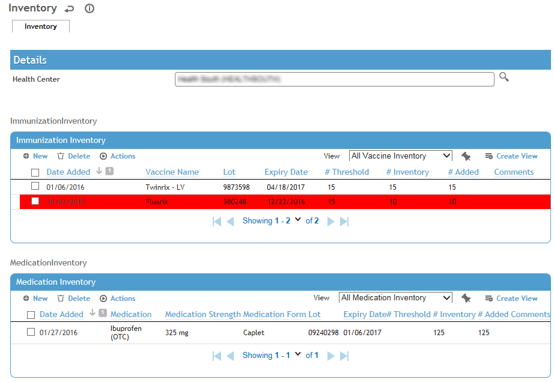
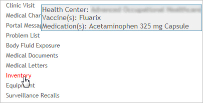

In the Occupational Health menu, click Inventory.
The current inventory of vaccines and medications for your default Health Center is shown. If necessary (and according to your security access), select a different health center.

Each lot (for which an inventory has been recorded) is listed. The # Inventory is only shown for the most recent entry. If you want to see all inventory records for a particular item, select it and choose Actions»Display History. To hide these records again, choose Actions»Hide History.
There are three ways to monitor for vaccines or medications below their threshold limit:
When in the Inventory module, any items below their threshold are highlighted in red (as shown in the example above).
Depending on your system settings, the Inventory menu name also appears in red. To quickly see which vaccines or medications are below their threshold, hover your mouse over the Inventory menu -- a pop-up message displays the health center and vaccine/medication name. To see the current inventory and threshold level, you must open the Inventory module.

The system setting also controls if information is shown for all health centers that you have access to, or only your default health center. If the system setting is set to “By Vaccine and Medication”, and you have more than one lot of a vaccine/medication, one below threshold and others above threshold, you will only be alerted when the combined inventory of all lots for that vaccine/medication are below the threshold.
A Dashboard indicator is available to alert you if any of the vaccines (for the health centers that you have access to) has an inventory amount less than what is defined in the Vaccine look-up table (see Using the Dashboards.).